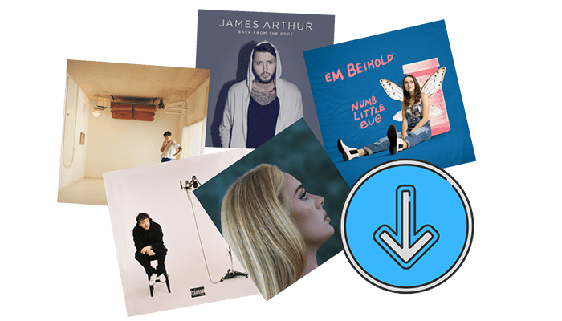

Artistas mas escuchados

Te presentamos los artistas mas escuchados del momento, aquellos quienes crean una coneccion entre la musica y la comunidad:
- YSY A: rapero, compositor, diseñador y empresario argentino. Sus canciones son una de las mas reproducidas recientemente.
- myke towers: cantante y compositor puertorriqueño de reguetón y trap. Tiene muchas canciones que llaman la atencion del publico
- ustin Drew Bieber: cantante y compositor canadiense.
- María de los Ángeles Becerra, conocida como María Becerra, es una cantante, compositora y exyoutuber argentina
- José Fernando Cosculluela Suárez, más conocido por su apellido y nombre artístico Cosculluela, es un cantante, compositor y productor discográfico puertorriqueño.
Top 10 albumes
Top 10 de los albumes mas reproducidos por la comunidad:
- Midnights. Taylor Swift. 184,6 millones de flujos. ...
- DeBÍ TiRAR MáS FOToS" de Bad Bunny
- "Hurry Up Tomorrow" de The Weeknd
- "MUSIC - SORRY 4 DA WAIT" de Playboi Carti
- "Alter Ego" de Lisa
- MUSIC. Playboi Carti.
- "Certified Lover Boy" Drake
- "Un Verano Sin Ti" Bad Bunny
- "Scorpion" Drake
- "UTOPIA" Travis Scott
Listas de reproducion
Las listas de reproducciones es algo que se utiliza mucho hoy en dia, ya sea para dormir, limpiar, bañarse, hacer ejercicio, etc. A continuacion te dejo algunas listas de reproducciones:

Videos mas destacados
Ariana grande tiene muchas canciones que destacan, pero esta es la mas escuchada:
The weekend cuenta con canciones muy famosas, pero esta cancion es la mas sobresaliente:
Billie Eilish tiene albumes muy destacados, pero esta cancion sobre sale mas que todas: